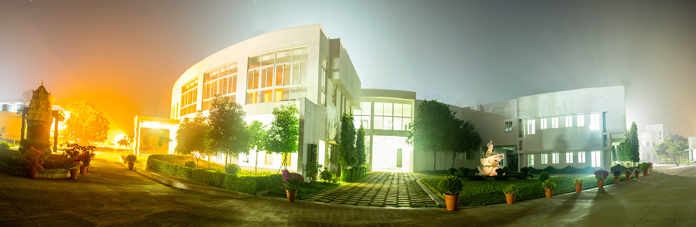

The capital city of Tamil Nadu, Chennai is at once, conventional and contemporary; a brilliant blend of tradition, art, technology, industrialization, education and development, making it one of India’s most important metropolitan cities.
The School of Engineering, Chennai is about 40 KMs away from Chennai, 90 KMs away from Tirupati and a stone’s throw away from the Periyapalayathamman Temple, on the State Highway SH50A, a village named Vengal has become the place where the future of the Country is being molded.

The School is aesthetically placed between the Arani and Kosasthalaiyar rivers, spread out on a sprawling 13.55 acres of land with a built-up area of 24,956 sqm, where the dreams of countless engineering aspirants find realization.
The School joins the School of Engineering at Coimbatore, Bengaluru and Amritapuri in the states of Tamil Nadu, Karnataka and Kerala.
The Chennai Campus offers students an array of engineering programs modeled on a choice-based credit system with continuous evaluation by faculty who mentor students.
Reaching Amrita School of Engineering from the Chennai International Airport
The Amrita College is well connected from the airport. There are several ways and routes to get to the College via different options by bus, train or a combination of the two as detailed below:
By Bus
Arriving at the Chennai International Airport, you can take either of the buses 70A or 70 to reach Avadi which is 25.8km away from the Airport. Disembarking at Avadi, buses 580 or 580Xcan get you into Amrita School of Engineering which is 26km away.
By Train and Bus
Catch the Metro train from Chennai Airport to reach Chennai Central and this is a 17kms journey. After getting down at the Chennai Central Station, catch the local EMU Train to Thiruninravur which is a 36kms journey. Disembarking at the Thiruninravur station, you can catch either of the two buses 580 or 580X to cover the last leg of 19kms which will get you into your destination.
Catch the local EMU train to cover the first 18km from Tirusulam to Chennai Park. Chennai Central is a mere .5km walk from Chennai Park. From Chennai Central the local EMU train can get you into Thiruninravur which is 36km away, from where the buses 580 or 580X will take you to the Amrita School of Engineering.
By Taxi
There are two taxi routes mainly, a shorter route of 55km and a longer route of 63kms. The two routes are detailed below:
Shorter Route of 55kms
Chennai Aiport to Amrita School of Engineering touching Tiruneermalai, Thirumudivakkam, Kundrathur, Nemlicheri Bypass, Thiruninravur and finally Tamaraipakkam to Amrita School of Engineering.
Longer Route of 63km
Chennai Airport to Amrita School of Engineering touching St. Thomas Mount, Ramapuram Porur Link Road, Vanagram, Maduravoil, Puzhal, Redhills, Alamathi and finally Tamaraipakkam to Amrita School of Engineering.
Reaching Amrita School of Engineering from the North
From Chennai Central
Thiruninravur is at a distance of 36km from Chennai Central and the local EMU Train can get you into Thiruninravur from where the buses 580 or 580X can take you to Amrita School of Engineering which is 19kms away.
From Arakkonam
Arakkonam is at a distance of 58kms away from Amrita School of Engineering. Catch the local EMU Train from Arakkonam to Thiruninravur which is a 39km journey. After disembarking at Thiruninravur, you can catch either of the two buses 580 or 580X to reach the Amrita School of Engineering which is only 19km away.
Reaching Amrita School of Engineering from the South
From Egmore
Amrita School of Engineering is 57km away from Egmore. A short train journey aboard the local EMU train from Chennai Egmore Station can getyou to Chennai Park which is only 1.4 km away. After getting down at Chennai Park, a short walk of .5km will get you to Chennai Central from wherethe local EMU Train is available to reach Thiruninravur which is 36km away. Disembarking at Thiruninravur, either of the buses 580 or 580X can get you into Amrita School of Engineering whichis 19km away.
From Koyambedu
You can reach Amrita School of Engineering from Koyambedu by bus via three different routes of 43.8kms, 46.3km and 49.8km.
Shortest route of 43.8kms
Catch either of the two buses 70A or 70 from Koyambedu to Avadi which is 17.7km away and then to cover the distance of 26.1km from Avadi to Amrita School of Engineering catch either of the two buses 580 or 580X.
Route of 46.3km
This route runs via Periyapalayam which is 40km away from Koyambedu and can be reached by bus 514 or by either of the buses 125K, 112A, 90A via Uthukottai. Getting down at Periyapalayam, there are several buses suchas the 580, 580X, 580P or 171 at your service to cover the remaining 6.3kms to Amrita School of Engineering
Route of 49.8km
This option takes you via Red Hills and Periyapalam.
From Koyambedu to Red Hills at a distance of 19km, two buses namely 114 or 113 may be boarded. After reaching Red Hills, you may board either the 514 bus or the 592 bus to reach Periyapalam which is at a distance of 24.5km. After getting down at Periyapalayam, there are several buses suchas the 580, 580X, 580P or 171 at your service to cover the remaining 6.3kms to Amrita School of Engineering.
By Taxi
The distance between Koyambedu and Amrita School of Engineering is a 42km journey by Taxi passing through Anna Nagar, Madhavaram, Redhills, Padiyanallur, Alamathi and finally Tamaripakkam to Amrita School of Engineering
Reaching Amrita School of Engineering from Nellore
By Bus
Nellore to Janapachatram Kuttroad is a distance of 160km. After reaching Redhills, catch any of the following buses to reach Periyapalayam which is at a distance of 24.5km:592, 514, 125k, 112A, 90A.
After reaching Periyapalayam, catch any of the following buses to reach Amrita School of Engineering which is at a distance of 6.3km : 580, 580X, 580P, 171.
By Train
Nellore to Amrita School of Engineering is a distance of 231km. First catch the either of the following trains from Nellore to get to Chennai Central at a distance of 176km: Hyderabad Chennai Centrl S.F./Grandtrunk/Chairman Exp./Jaipur – Coimbatore Super Fast/Bitragunta/Chennai Central
After getting down at Chennai Central you can get to Thiruninravur which is at a distance of 36km from Chennai Central by a local EMU train. Getting down at Thiruninravur, catch either the 580 bus or 580X bus to reach Amrita School of Engineering 19km away.
Reaching Amrita School of Engineering from Hyderabad
By Bus
Hyderabad to Janapachatram Kuttroad is a distance of 600km. After reaching Redhills, catch any of the following buses to reach Periyapalayam which is at a distance of 24.5km:592, 514, 125k, 112A, 90A.
After reaching Periyapalayam, catch any of the following buses to reach Amrita School of Engineering which is at a distance of 6.3km: 580, 580X, 580P, 171
By Train
Catch either of the following trains from Hyderabad to Chennai Central to cover the distance of 716 km between Hyderabad and Chennai Central: Chennai Central Super Fast/Charminar Express
Disembarking at the Chennai Central, catch a local EMU train to reach Thiruninravur which is at a distance of 36km. After getting down at Thiruninravur, catch either of the two buses 580 or 580X to reach Amrita School of Engineering which is 19km away.
Reaching Amrita School of Engineering from Tirupathi
By Bus
The temple town of Tirupathiis at a distance of 93km from Periyapalayam and buses via Uthukottai can take you to Periyapalayam from where any of the following buses can get you into Amrita School of Engineering which is at a distance of 6.3km: 580, 580X, 580P, 171
By Train
The temple town of Tirupathi is well connected to Thiruvallur which is at a distance of 105km and any of the following trains can get you into Thiruvallur:Exp, Garudadri Exp, Tirupathi Exp, Sapthagiri Exp. After disembarking at the Thiruvallur station, a local EMU Train can help you reach Thiruninravur which is at a distance of 12km.From Thiruninravur, either of the buses 580 or 580X can be boarded to reach Amrita School of Engineering at a distance of 19km.
Bus Routes:(Airport to Amrita School of Engineering)– 51.8 km
Chennai Airport to Avadi -Bus Numbers – 70A / 70 – 25.8 km
Avadi to AMRITASchool of Engineering- BusNumbers – 580 / 580x – 26 km
Train Routes: (Airport to Amrita School of Engineering) – 72 km
Chennai Airport to Chennai Central – Metro Train – 17 km
Chennai Central to Thiruninravur – for Local EMU Train – 36 km
Thiruninravur to AMRITASchool of Engineering – BUS ROUTES 580 /580X – 19 km
Train Routes : (Airport to Amrita School of Engineering) – 73.5 km
Tirusulam to Chennai Park – for Local EMU Train – 18 km
Chennai Park to Chennai Central – Walkable Distance – 0.5 km
Chennai Central to Thiruninravur – for Local EMU Train – 36 km
Thiruninravur to AMRITASchool of Engineering – BUS ROUTES 580 /580X- 19 km
Train Routes: (NORTH) (Central to Amrita School of Engineering) - 55 km
Chennai Central to Thiruninravur – for Local EMU Train – 36 km
Thiruninravur to AMRITASchool of Engineering – BUS ROUTES 580 /580X – 19 km
Train Routes : (Arakkonam to Amrita School of Engineering) – 58 km
Arakkonam to Thiruninravur – Local EMU Train – 39 km
Thiruninravur to Amrita School of Engineering – BUS ROUTES 580 /580X – 19 km
Train Routes :(South) (Egmore to Amrita School of Engineering) – 57 km
Chennai Egmoreto Chennai Park – for Local EMU Train – 1.4 km
Chennai Park to Chennai Central – Walkable Distance – 0.5 km
Chennai Central to Thiruninravur – for Local EMU Train – 36 km
Thiruninravur to AMRITASchool of Engineering – BUS ROUTES 580 /580X – 19 km
Taxi Route (1): (Airport to Amrita School of Engineering) – 55 km
Chennai Airport
Tiruneermalai
Thirumudivakkam
Kundrathur
Nemilicheri (Bypass)
Thiruninravur
Tamaraipakkam
Amrita School of Engineering
Taxi Route (2): (Airport to Amrita School of Engineering) – 63 km
Chennai Airport
St. Thomas mount
Ramapuram
Porur Link Road
Vanagaram
Maduravoil
Puzhal
Redhills
Alamathi
Tamaraipakkam
Amrita School of Engineering
Bus Routes: (Koyambedu to Amrita School of Engineering) – 46.3 km
Koyambeduto Periyapalayam – Bus Number – 514 – 40 km
Koyambeduto Periyapalayam – Bus Number –125K/112A /90A (Uthukkottai Bus) – 40 km
Periyapalayam to AMRITASchool of Engineering – Bus Number – 580 /580X / 580P /171 – 6.3 km
Bus Routes : (Koyambedu to Amrita School of Engineering) – 49.8 km
Koyambedu to Red hills – Bus Number – 114 / 113 – 19 km
Red hills to Periyapalayam – Bus Number - 514 / 592 – 24.5 km
Periyapalayam to AMRITASchool of Engineering – Bus Number – 580 /580x / 580P /171 – 6.3 km
Bus Routes: (Koyambedu to Amrita School of Engineering) – 43.8 km
Koyambedu to Avadi – Bus Number – 70A / 70 – 17.7 km
Avadi to Amrita School of Engineering – Bus Number – 580 / 580X – 26.1 km
Taxi Route: (Koyambedu to Amrita School of Engineering) – 42 km
Koyambedu
Anna Nagar
Madhavaram
Redhills
Padiyanallur
Alamathi
Tamaraipakkam
Amrita School of Engineering
Reaching Amrita School of Engineering from Andhra
Bus Routes: (Nellore to Amrita School of Engineering)- 190.8 km
Nellore to JanapachatramKuttroad – 160 km
Redhills to Periyapalayam - Bus Numbers 592 / 514 / 125k / 112A / 90A -24.5 km
Periyapalayam to Amrita School of Engineering – Bus Number – 580 / 580x / 580P / 171 – 6.3 km
Bus Routes: (Hyderabad to Amrita School of Engineering) – 630.8 km
Hyderabad to JanapachatramKuttroad – 600 km
Redhills to Periyapalayam - Bus Numbers 592 / 514 / 125k / 112A / 90A -24.5 km
Periyapalayam to Amrita School of Engineering – Bus Number – 580 / 580x / 580P / 171 – 6.3 km
Bus Routes : (Tirupathy to Amrita School of Engineering) – 99.3 km
Tirupathy to Periyapalayam – 93 km (Via – Uthukkottai)
Periyapalayam to Amrita School of Engineering – Bus Number – 580 / 580x / 580P / 171 – 6.3 km
Train Routes : (Tirupathy to Amrita School of Engineering) – 136 km
Tirupathy to Thiruvallur – Exp. /Garudadri Exp. /Tirupathy Exp. /Sapthagiri Exp. – 105 km
Thiruvallur toThiruninravur – Local EMU Train – 12 km
Thiruninravur to Amrita School of Engineering – BUS ROUTES 580 / 580X – 19 km
Train Routes : (Nellore to Amrita School of Engineering) – 231 km
Nellore to Chennai Central –Hyderabad Chennai Central S.F /Grandtrunk /Chairman Exp./ Jaipur – Coim. Super Fast / Bitragunta / Chennai Central - 176 km
Chennai Central to Thiruninravur – for Local EMU Train – 36 km
Thiruninravur to Amrita School of Engineering – BUS ROUTES 580 / 580X – 19 km
Train Routes: (Hyderabad to Amrita School of Engineering) – 771 km
Hyderabad to Chennai Central – Chennai Central Super Fast / Charminar Exp. - 716 km
Chennai Central to Thiruninravur – for Local EMU Train – 36 km
Thiruninravur to Amrita School of Engineering – BUS ROUTES 580 / 580X – 19 km